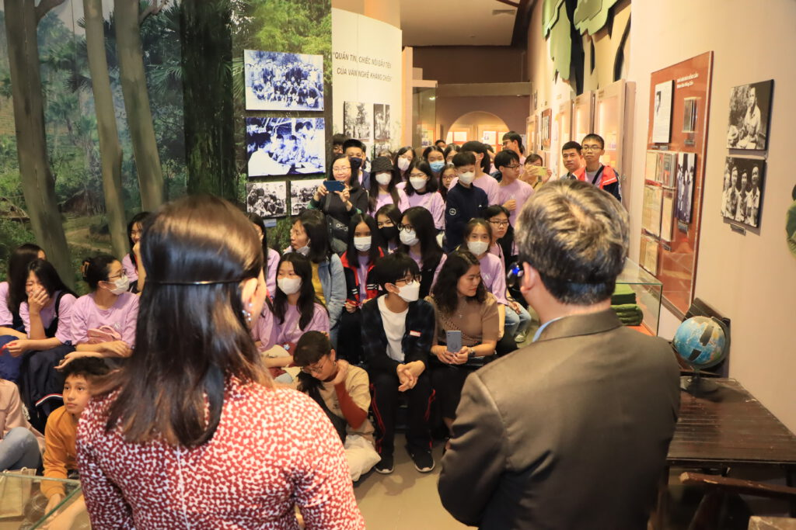
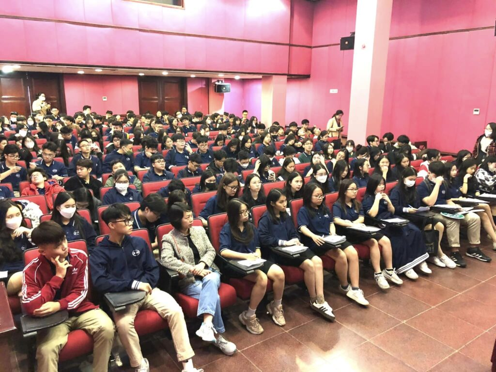

Trong bài
Tham quan Bảo tàng Văn học Việt Nam là cơ hội để học sinh, sinh viên và các tổ chức tìm hiểu lịch sử văn học dân tộc thông qua hệ thống hiện vật, tư liệu và không gian trưng bày trực quan. Để chuyến đi diễn ra thuận lợi, các trường học, câu lạc bộ và đoàn thể nên chủ động liên hệ với bảo tàng, thống nhất kế hoạch tham quan và chuẩn bị nội dung hoạt động phù hợp với thành viên trong đoàn.
1. Đối tượng đăng ký tham quan theo đoàn
Hoạt động tham quan theo đoàn phù hợp với nhiều nhóm đối tượng, đặc biệt là:
- Trường học: tổ chức hoạt động trải nghiệm, học tập ngoại khóa cho học sinh các cấp.
- Trường đại học, cao đẳng: phục vụ học tập, nghiên cứu văn học, lịch sử, văn hóa và xuất bản.
- Câu lạc bộ, nhóm yêu văn chương: tìm hiểu cuộc đời, sự nghiệp của các nhà văn, nhà thơ và những dấu mốc của văn học Việt Nam.
- Cơ quan, đoàn thể, tổ chức xã hội: tổ chức sinh hoạt chuyên đề, hoạt động văn hóa và giáo dục truyền thống.

Tùy theo độ tuổi, số lượng thành viên và mục tiêu chuyến đi, đơn vị tổ chức có thể xây dựng chương trình trải nghiệm phù hợp, kết hợp giữa tìm hiểu kiến thức, quan sát hiện vật và giao lưu, trao đổi.
2. Hướng dẫn liên hệ và đăng ký
Để chủ động về thời gian và công tác tổ chức, các đoàn nên liên hệ với Bảo tàng Văn học Việt Nam trước ngày dự kiến tham quan.
Khi đăng ký, đơn vị cần chuẩn bị những thông tin cơ bản sau:
- Tên trường học, câu lạc bộ hoặc đơn vị tổ chức.
- Số lượng người tham gia, độ tuổi và thành phần đoàn.
- Ngày, giờ dự kiến đến tham quan.
- Nhu cầu thuyết minh, hướng dẫn tham quan hoặc tổ chức hoạt động ngoại khóa.
- Thông tin người phụ trách đoàn và phương thức liên hệ.
Sau khi tiếp nhận thông tin, đơn vị nên trao đổi với bảo tàng để xác nhận lịch tham quan, các điều kiện tiếp đón, nội dung chương trình và những yêu cầu cần lưu ý.

Lưu ý: Thông tin liên hệ, giờ mở cửa, mức phí (nếu có) và khả năng bố trí thuyết minh cần được xác nhận trực tiếp với bảo tàng trước khi tổ chức chuyến đi. Không nên tự mặc định các dịch vụ đã được đăng ký hoặc bảo đảm có sẵn.
3. Chuẩn bị trước chuyến tham quan
Một chuyến tham quan hiệu quả cần có sự chuẩn bị từ cả đơn vị tổ chức và người tham gia.

Đối với đơn vị tổ chức, cần xây dựng kế hoạch cụ thể, phân công người phụ trách, thống nhất phương án di chuyển và quản lý thành viên. Với đoàn học sinh, sinh viên, giáo viên hoặc người phụ trách nên phổ biến trước mục đích chuyến đi, nội quy tham quan và các yêu cầu bảo đảm an toàn.
Đối với người tham gia, nên tìm hiểu khái quát về bảo tàng, chuẩn bị sổ ghi chép hoặc thiết bị cần thiết cho hoạt động học tập. Các đoàn cũng có thể giao nhiệm vụ tìm hiểu trước về một nhà văn, tác phẩm hoặc giai đoạn văn học để tăng tính chủ động trong quá trình tham quan.
Đặc biệt, người tham gia cần tuân thủ hướng dẫn tại khu trưng bày, không tự ý chạm vào hiện vật, di chuyển đồ trưng bày hoặc gây ảnh hưởng đến không gian chung.
4. Gợi ý tổ chức hoạt động ngoại khóa
Bên cạnh tham quan và nghe thuyết minh, các đơn vị có thể thiết kế hoạt động ngoại khóa nhằm tăng khả năng ghi nhớ và khuyến khích người tham gia chủ động khám phá.
Một số hoạt động gợi ý:
- Theo dấu nhà văn: chia nhóm tìm hiểu thông tin về các tác giả, tác phẩm hoặc nhân vật văn học được giới thiệu trong bảo tàng.
- Giải mã hiện vật: lựa chọn một hiện vật tiêu biểu, tìm hiểu nguồn gốc, ý nghĩa và mối liên hệ với lịch sử văn học.
- Nhật ký tham quan: ghi lại những điều ấn tượng nhất sau chuyến đi, kèm hình ảnh hoặc cảm nhận cá nhân.
- Thử tài kiến thức văn học: tổ chức trò chơi hỏi đáp về tác giả, tác phẩm và các giai đoạn phát triển của văn học Việt Nam.
- Sáng tạo cùng văn chương: viết cảm nhận, sáng tác thơ ngắn, thiết kế poster hoặc thực hiện sản phẩm truyền thông sau chuyến tham quan.
Với học sinh nhỏ tuổi, hoạt động nên ngắn gọn, trực quan và có tính tương tác. Với sinh viên hoặc câu lạc bộ chuyên môn, có thể tập trung vào nghiên cứu hiện vật, thảo luận về giá trị văn học và xây dựng sản phẩm nội dung sau chuyến đi.
5. Lưu ý để chuyến đi diễn ra thuận lợi
Để hoạt động tham quan đạt hiệu quả, các đoàn nên đến đúng giờ, tuân thủ lịch trình đã thống nhất và duy trì sự phối hợp giữa người phụ trách với các thành viên. Nếu có thay đổi về số lượng người hoặc thời gian, đơn vị tổ chức nên thông báo sớm cho bảo tàng.
Sau chuyến đi, trường học, câu lạc bộ hoặc đoàn thể có thể tổ chức tổng kết bằng bài thu hoạch, bài thuyết trình, triển lãm ảnh hoặc nội dung truyền thông trên website và mạng xã hội. Đây cũng là cách giúp kiến thức tiếp nhận tại bảo tàng được củng cố và lan tỏa rộng rãi hơn.
Một chuyến tham quan được chuẩn bị chu đáo không chỉ mang lại trải nghiệm trực tiếp với di sản văn học mà còn góp phần khơi gợi hứng thú đọc sách, tìm hiểu lịch sử và nuôi dưỡng tình yêu đối với văn chương Việt Nam.
Bảo tàng Văn học Việt Nam